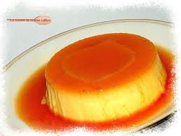

Crème renversée
Ingrédients
4×
- 175 g de sucre
- 2 à 3 cas d'eau
- 0.5 l de lait
- 1 sachet de sucre vanillé
- 3 oeufs

Préparation
Étape 1
Préparer un caramel avec 100 g de sucre et 2 à 3 cas d'eau et en napper le fond des cocottes (ou utiliser du caramel au beurre salé).
Étape 2
Porter à ébullition 0.5 l de lait avec 75 g de sucre et 1 sachet de sucre vanillé.
Étape 3
Battre 3 oeufs et y verser doucement le lait chaud.
Étape 4
Verser sur le caramel et cuire environ 30min au bain-marie à 180ºC. C’est cuit quand le centre est ferme et que la lame d’un couteau ressort propre.
Résumé
100 g de sucre
2 à 3 cas d'eau
Préparer un caramel
0.5 l de lait
75 g de sucre
1 sachet de sucre vanillé
Porter à ébullition
3 oeufs
Battre
cuire bain-marie 180ºC